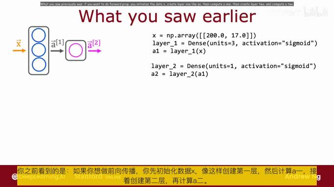
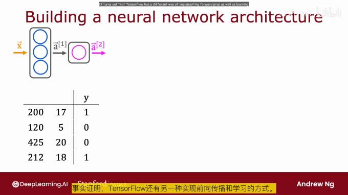
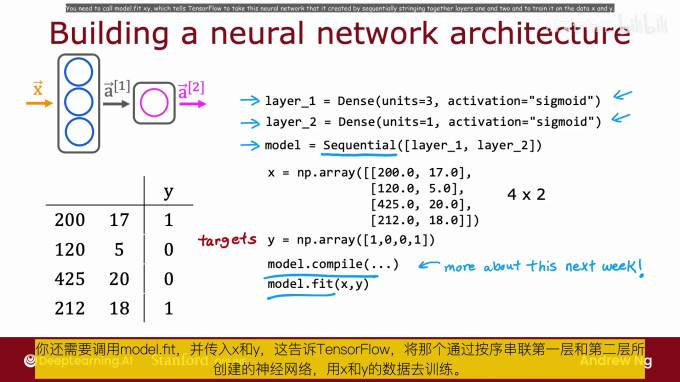
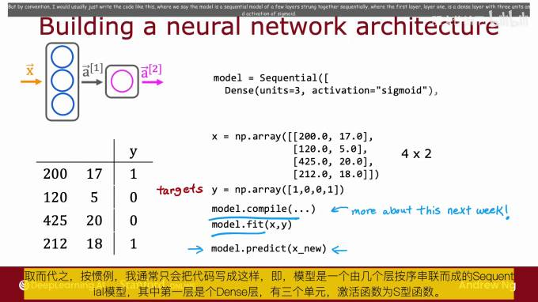
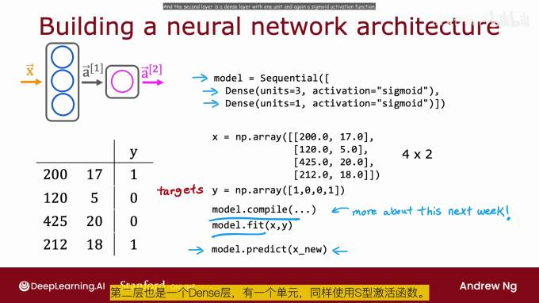
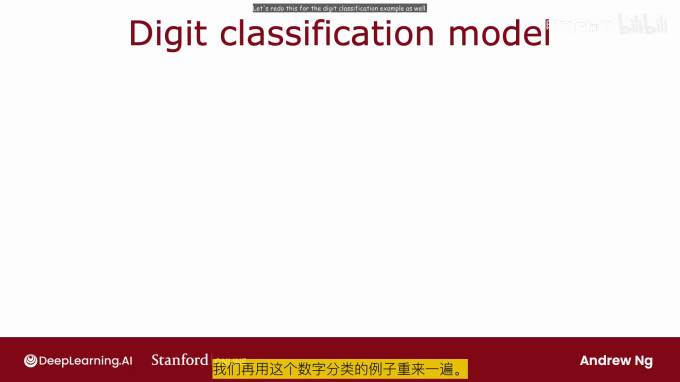
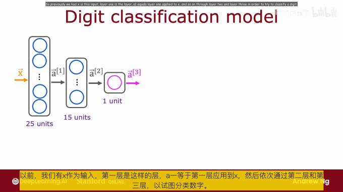
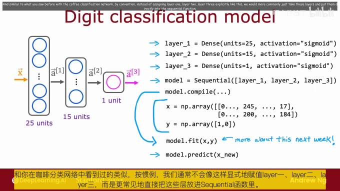
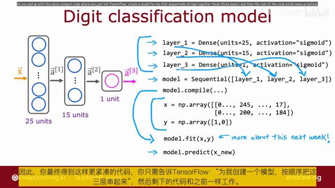

到目前为止，你已经看了一堆 TensorFlow 代码，学习了如何在 TensorFlow 中构建一个层，如何用 TensorFlow 在单个层上进行前向传播，也学习了数据在 TensorFlow 中的表示。00:02
让我们把这些整合起来，谈谈如何在 TensorFlow 中构建一个神经网络。00:17
这也是本周最后一个关于 TensorFlow 的视频。00:24
在这个视频中，你还将学习另一种构建神经网络的方法，它甚至比你目前看到的还要稍微简单一点。00:28
你之前看到的是：如果你想做前向传播，你先初始化数据 x，像这样创建第一层，然后计算 a 一，接着创建第二层，再计算 a 二。n。00:39

这是一种显式执行前向传播的方式，一次进行一层计算。00:53
事实证明，TensorFlow 还有另一种实现前向传播和学习的方式。01:02

我来给你们展示另一种在 TensorFlow 中构建神经网络的方法，前面步骤跟以前一样，你先创建第一层，再创建第二层。n。01:12
但现在，你不用再手动把数据传给第一层，然后再把第一层的激活值传给第二层，我们可以转而告诉，我们希望它把第一层和第二层串联起来，形成一个神经网络。01:23
这就是 TensorFlow 中函数的作用，相当于在说：“亲爱的 TensorFlow，请为我创建一个神经网络，只需把我刚创建的这两层按顺序串在一起就行。”。01:42
事实证明，有了框架，TensorFlow 能为你做很多工作。01:57
假设你在左侧有这样一个训练集。02:04
你可以把训练数据的输入 x 放入一个 numpy 数组中。02:10
这里是一个四乘二的矩阵。02:18
而目标标签 y 则可以像下面这样写。02:23
这只是一个长度为四的一维数组。02:29
Y，这组目标值，可以存成这样一个一维数组，一、零、零、一，对应着四个训练样本。02:34
事实证明，给定以矩阵 x 和数组 y 存储的数据，如果你想训练这个神经网络，所有你需要做的就是调用两个函数。02:45
你需要调用 model.compile 并传入一些参数。03:00
我们下周会详细讨论这个，所以现在不用担心。03:04
你还需要调用 model.fit，并传入 x 和 y，这告诉 TensorFlow，将那个通过按序串联第一层和第二层所创建的神经网络，用 x 和 y 的数据去训练。N。03:09

不过我们将学习如何，但我们将下周学习如何执行此操作的细节。03:26
最后，如何在这个神经网络上进行推理呢？03:34
如果你有一个新样本，比如，它是一个包含这俩特征的数组，那么要执行前向传播，你不必自己一层一层地算，只需对调用 model.predict 即可。03:41
这将会根据你输入的 X 值，为你输出相应的 A 二值。04:00
所以，model.predict 会使用你用函数构建好的那个神经网络，为你执行前向传播，或者说进行推理。04:09
现在，我想把上面这三行代码再稍微简化一下，就是在 TensorFlow 编码时，按照惯例，我们通常不会像下面这样，显式地把这两个层赋值给两个变量，layer 一和 layer 二。n。04:20
取而代之，按惯例，我通常只会把代码写成这样，即，模型是一个由几个层按序串联而成的模型，其中第一层是个 Dense 层，有三个单元，激活函数为 S 型函数。04:40

第二层也是一个 Dense 层，有一个单元，同样使用 S 型激活函数。04:56

所以，如果你看别人的 TensorFlow 代码，会更经常看到类似这样的写法，而不是显式地赋值给这些—、layer 二的变量。n。05:03
这基本就是你在 TensorFlow 里训练和推理神经网络所需的代码了。05:18
再次说明，关于训练的部分，即 compile 和 fit 函数，我们会在下周更详细地讨论。05:27
我们再用这个数字分类的例子重来一遍。05:36

以前，我们有 x 作为输入，第一层是这样的层，a 一等于第一层应用到 x，然后依次通过第二层和第三层，以试图分类数字。05:41

使用新的编码习惯，并用 TensorFlow 的函数，你可以改而指定第一、二、三层分别是什么，然后告诉 TensorFlow 为你把这些层串成一个神经网络。05:55
和之前一样，你可以接着把数据存到矩阵里，运行 compile 函数，并按如下方式拟合模型。06:12
再说一遍，下周会更详细地讲这个。06:22
最后，要进行推理或者说预测，你可以对使用 model.predict。06:26
和你在咖啡分类网络中看到过的类似，按惯例，我们通常不会像这样显式地赋值 layer 一、layer 二、三，而是更常见地直接把这些层放进函数里。06:35


因此，你最终得到这样更紧凑的代码，你只需告诉 TensorFlow：“为我创建一个模型，按顺序把这三层串起来”，然后剩下的代码和之前一样工作。一。07:03
所以，这就是你要如何在 TensorFlow 中构建一个神经网络。07:05
现在，我知道在学习这些技术时，有时可能会有人对你说，嘿，实现这五行代码。07:10
然后你输入了五行代码，接着有人说，恭喜你，只用五行代码，你就构建出了这个疯狂、复杂且顶尖的神经网络。07:17
有时候这会让你疑惑，我到底用这区区五行代码做了什么？07:29
我希望你从这门机器学习专项课程中学到的一件事，就是能够使用像 TensorFlow 这样的前沿库来高效地完成工作。07:35
但我并不希望你仅仅只是调用五行代码，却不了解代码底层到底在做什么。07:45
所以，在下个视频里，我想回头分享给你，如何自己用 Python 从头实现前向传播，这样你就能自己理解整个流程。07:55
实际上，大多数机器学习工程师并不经常用 Python 来实现前向传播。08:06
我们只是用像 TensorFlow 和 PyTorch 这样的库。08:13
但因为我想让你自己理解这些算法是如何工作的，以便万一出了问题，你能自己想明白可能需要改什么，什么可能会管用，什么不太可能管用。08:16
那我们也来看看，要你自己从头实现前向传播，需要做些什么。08:29
因为这样一来，即使你在调用库，让它高效运行并在你的应用中大显身手时，我也希望你在脑海中，能对代码实际上在做什么有更深刻的理解。08:36
那么，就让我们继续观看下一段视频。08:50